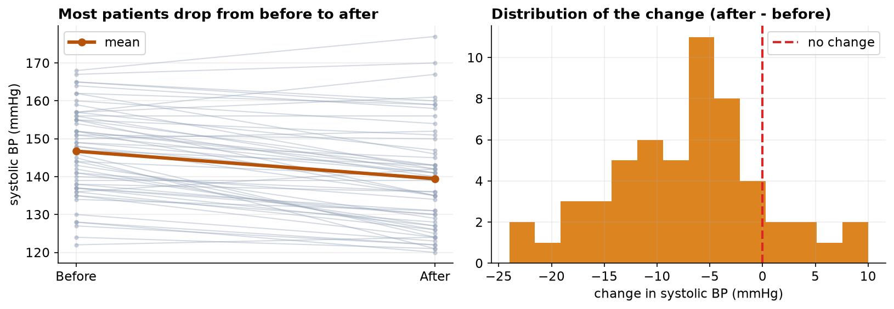
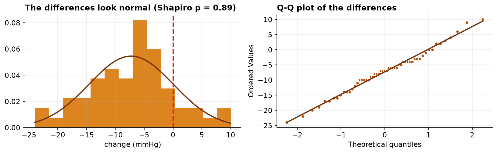
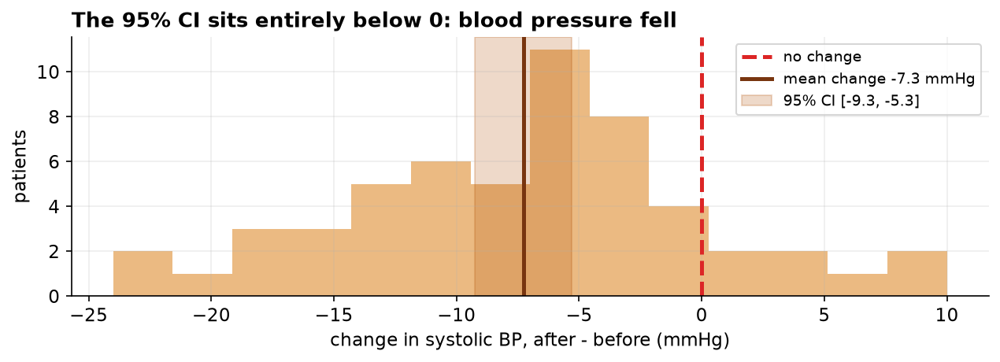

Effect of an Eight-Week Program on Systolic Blood Pressure
A paired-samples analysis, with a note on uncontrolled designs.
Capstone Technical Report · Statistics, Data Science and AI: A Visual Handbook · John Fisher
Keywords: Keywords: paired t-test; within-subject design; regression to the mean; single-arm study; Wilcoxon signed-rank; effect size.
1. Introduction
When the same units are measured under two conditions, the paired (within-subject) design removes between-unit variation and is markedly more efficient than an independent-groups comparison. Here systolic blood pressure is measured before and after an eight-week program in a cohort of hypertensive patients. The hypotheses concern the mean of the within-patient change delta = after - before: H0: mean(delta) = 0 versus H1: mean(delta) != 0, two-sided at alpha = 0.05. A second, equally important aim is inferential hygiene: to state precisely what a single-arm pre-post design licenses.
2. Data
Each record contains a patient identifier, age, and SBP before and after the program. A paired analysis requires both measurements, so patients lacking a follow-up (dropouts) are not analyzable. After removing duplicates, dropouts, and physiologically impossible values (Table 1), n = 55 complete pairs remained.
| Step | Rule | Removed | Remaining |
|---|---|---|---|
| Raw export | — | — | 64 |
| De-duplication | drop duplicate rows | 2 | 62 |
| Complete pairs | drop rows missing either reading | 4 | 58 |
| Range filter | retain 70–250 mmHg both readings | 3 | 55 |
3. Methods
The paired t-test is a one-sample t-test on the differences and assumes those differences are approximately normal; this was assessed by Shapiro-Wilk and a Q-Q plot of the differences (not of the raw readings). The Wilcoxon signed-rank test served as a distribution-free sensitivity analysis. Effect size was Cohen's d_z = mean(delta)/SD(delta), the standardization appropriate to a within-subject contrast. To quantify the value of the design, an (inappropriate) independent-samples t-test on the same data is reported alongside, comparing standard errors. Analyses used SciPy in Python 3.
4. Results
| Quantity | Before | After | Change (after − before) |
|---|---|---|---|
| Mean (mmHg) | 146.7 | 139.5 | -7.27 |
| SD (mmHg) | 11.7 | 13.9 | 7.32 |
| n (pairs) | 55 | 55 | 55 |

The within-patient differences were consistent with normality (W = 0.989, p = 0.89; Figure 2), validating the paired t-test. The mean change of -7.27 mmHg was highly significant (Table 3), with a 95% CI of [-9.25, -5.29] mmHg lying entirely below zero and a large within-subject effect (d_z = 0.99). The Wilcoxon test agreed. The high pre-post correlation (r = 0.85) is what makes the paired design efficient: the paired standard error (0.99 mmHg) is about 2.5 times smaller than the independent-groups standard error (2.44 mmHg), turning an independent-samples t of -2.98 into a paired t of -7.37 on identical data.

| Test | Statistic | df | p-value | Effect / interval |
|---|---|---|---|---|
| Paired t (primary) | t = -7.372 | 54 | 1.03e-09 | d_z = 0.99; 95% CI [-9.25, -5.29] mmHg |
| Wilcoxon signed-rank | W = 110.0 | — | 8.13e-08 | distribution-free confirmation |
| Independent t (for contrast) | t = -2.98 | 108 | 3.60e-03 | ignores pairing; far less efficient |

5. Interval estimates and effect modification by age
| Quantity | Estimate | 95% CI | Method |
|---|---|---|---|
| Mean change in systolic BP | −7.27 mmHg | −9.25 to −5.29 | paired t interval |
| Cohen's dz | 0.99 | 0.71 to 1.39 | percentile bootstrap |
| Pre-post correlation | 0.85 | 0.78 to 0.90 | percentile bootstrap |
| Age vs change in BP | r = +0.27 | p = 0.050 | Pearson |
| Change, younger half | −10.23 mmHg | — | median split at 59 years |
| Change, older half | −4.62 mmHg | p = 0.004 for the contrast | median split at 59 years |
The confidence interval carries information the p-value does not. A 5 mmHg reduction is a conventional threshold of clinical relevance, and the interval's upper bound of −5.29 mmHg sits immediately adjacent to it. The evidence is therefore consistent with a benefit that only marginally exceeds the threshold, which is a materially weaker claim than the p-value alone conveys.
The age analysis was not part of the original report and alters its interpretation. Age is unrelated to baseline pressure in this cohort but is related to the magnitude of change, with a positive coefficient indicating smaller reductions among older participants. Dichotomized at the median, the younger half improved by more than twice as much as the older half, a contrast comparable in size to the overall programme effect.
This constitutes effect modification rather than confounding: the association is not explained away but qualified. Two cautions apply. The subgroup boundary was selected after inspection of the data, so the finding is hypothesis-generating and requires pre-specified replication. More fundamentally, covariate analysis cannot compensate for the absence of a control arm. Regression to the mean, placebo response, and secular variation are unmeasured in this design and would themselves produce an age gradient, since older participants recruited on elevated readings are positioned differently with respect to their own long-run means.
6. Discussion
Systolic blood pressure declined by approximately 7 mmHg, a change that is both statistically decisive and, clinically, of a magnitude associated with reduced cardiovascular risk. The paired design is the correct and efficient analysis for the question 'did SBP change'.
It is the causal question that requires caution, and this is the methodological crux. The study is single-arm: there is no concurrent control group. Consequently the observed decline conflates any program effect with (i) regression to the mean, which is expected because patients were enrolled on the basis of elevated readings and extreme values tend to move toward the mean on remeasurement; (ii) secular and seasonal trends and lifestyle changes coincident with enrollment; and (iii) measurement effects such as the white-coat response attenuating at the second visit. None of these is estimable without a comparison arm measured identically but not exposed to the program. A randomized controlled design, or at minimum a contemporaneous control, is required before attributing the reduction to the intervention. The paired t-test answers 'did it change'; it is structurally silent on 'did the program cause it'.
7. Conclusion
Systolic blood pressure fell significantly over the program (paired t(54) = -7.37, p < 0.001; mean change -7.3 mmHg, 95% CI [-9.25, -5.29]; d_z = 0.99), robustly across parametric and rank-based tests. Absent a control arm, the decline is not attributable to the program, and a controlled follow-up is the appropriate next step.
References
- Student (1908). The probable error of a mean. Biometrika, 6(1), 1–25.
- Shapiro, S. S., & Wilk, M. B. (1965). An analysis of variance test for normality. Biometrika, 52(3–4), 591–611.
- Wilcoxon, F. (1945). Individual comparisons by ranking methods. Biometrics Bulletin, 1(6), 80–83.
- Barnett, A. G., van der Pols, J. C., & Dobson, A. J. (2005). Regression to the mean: what it is and how to deal with it. International Journal of Epidemiology, 34(1), 215–220.
- Vickers, A. J., & Altman, D. G. (2001). Analyzing controlled trials with baseline and follow-up measurements. BMJ, 323(7321), 1123–1124.
- Cohen, J. (1988). Statistical Power Analysis for the Behavioral Sciences (2nd ed.). Lawrence Erlbaum.
Reproducibility
The dataset (capstone-blood-pressure-before-after.xlsx) and an executable notebook reproducing every statistic, table, and figure accompany the chapter. Analyses use NumPy, pandas, SciPy, and Matplotlib.